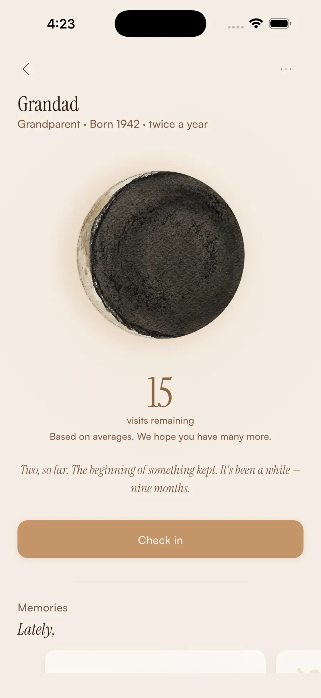

A softer way to count what matters
You don't experience a lifetime together. You experience visits.
Counted gives you a gentle estimate of the visits you may still share, then gives you a private place to remember the ones that happen.
No account. No relationship data collected.
A private first step
How many visits might still be ahead?
Try a small version of the idea behind Counted. Use an approximate age, a cadence, and a population average. Nothing is named, saved, or sent.
This calculator makes no external requests and stores nothing.
Your reflective estimate
0 remaining visits
Based on averages, you may share roughly 0 more visits.
We hope you have many more.
This is a reflective estimate based on approximate age, region, and how often you meet. It is not a prediction of lifespan or real-world outcomes.
A quiet pause
We couldn't load the estimate data. Your other Counted options are still here.
See time differently
The Eclipse makes an abstract feeling easier to see.
The Eclipse offers a quiet view of the estimated opportunities that may have passed and those that may still be ahead.
It is not a record of actual time already shared. It is a gentle, population-level estimate that changes with age, cadence, and the assumptions you choose.
Try the estimateKeep the moments that matter
Close the app with something worth remembering.
Check in after a visit with a date, a photo, a story, or a small sentence. The Timeline gives those moments somewhere to gather, without turning them into a performance.
01Check in Save what happened while it is still close.
02Look back Let a quiet timeline hold the details.

A gentle nudge, when you want one
The point is to put your phone down.
Receive up to two gentle reminders each week, each focused on someone you care about.
Reminders are local, configurable, and never designed as guilt or urgency. Counted is meant to lead you back to a real conversation, not keep you in the app.
Privacy architecture
The people you care about stay out of our servers.
Counted never sends your names, photos, visits, or memories to its own servers. Your live record stays on your device. Device backups follow your Apple settings, and encrypted exports go only where you choose.
In development
Keep the people who matter present across your iPhone.
Counted Plus is a direction for thoughtful Apple-native surfaces: Home Screen widgets, Lock Screen presence, memory surfaces, and bounded Live Activity moments.
Concepts only. No release date, price, device list, or final design has been promised.
Want to see where it goes?
Join the early-access list for meaningful updates, beta invitations, and launch news worth sharing.
Questions worth answering
A little more clarity.
If this number feels tender, that is information too. Counted is an invitation to notice, not a forecast.
Is the number a prediction?
No. It is a reflective estimate based on population averages, approximate age, region, and how often you meet. It cannot predict lifespan or real-world outcomes.
How does Counted estimate remaining visits?
It interpolates a regional life-expectancy table, applies the app's age-adjustment rules, and multiplies the estimated remaining years by your visit frequency. The app uses Realistic mode by default on this page.
Does logging a visit reduce the estimate?
No. The estimate changes with time and assumptions. A check-in preserves what happened; saving it is not treated as subtracting one from the estimate.
Where are my memories stored?
In Counted's local app container on your device. Counted does not operate a relationship-data cloud or send your names, photos, visits, or memories to its own servers.
What happens with Apple device backup?
Device backup may include Counted data according to your Apple settings and the app's device-backup preference. Counted cannot access, inspect, recover, or remotely delete an Apple device backup.
Does Counted collect analytics or require an account?
No. Counted has no account requirement, behavioral analytics, or advertising SDK. The website calculator also stores nothing and sends no calculator values anywhere.
How often can Counted remind me?
Up to two gentle reminders each week, each focused on someone you care about. They are scheduled locally and can be configured in the app.
What is Counted Plus?
Counted Plus is a concept in development for thoughtful Apple-native surfaces, including widgets, Lock Screen presence, memory surfaces, and bounded Live Activity moments.
Is Counted Plus available now?
Not yet. The core Counted experience is free. Join the early-access list if you want a meaningful update when the direction is ready to share.
A note from the creator
Family time is experienced in visits.
I started Counted with a simple realization: family time is rarely felt as years. It is felt in visits, phone calls, and ordinary afternoons. I wanted to make a small tool that encourages closing the phone and making the next real moment easier to choose.
Pratham